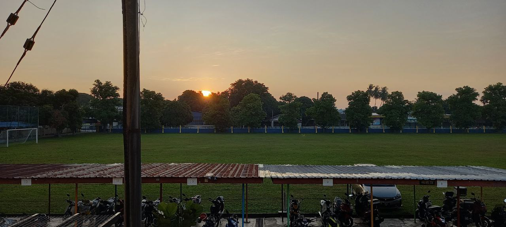
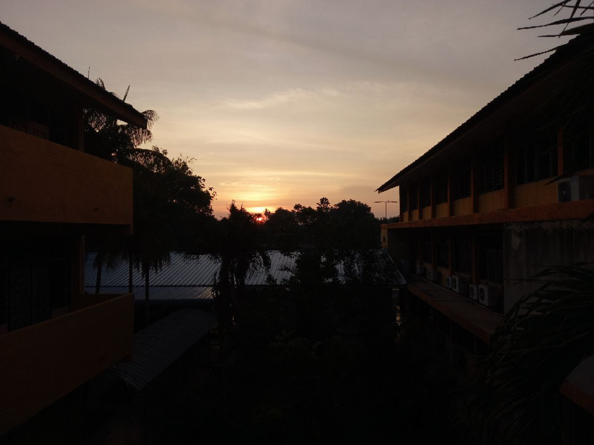
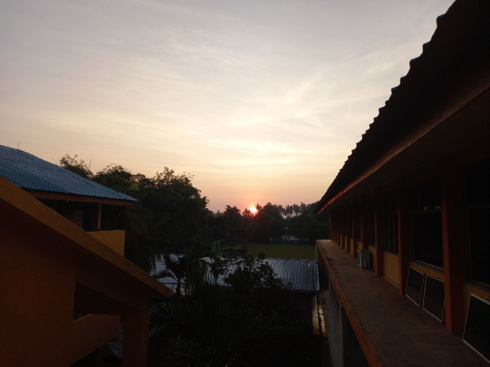
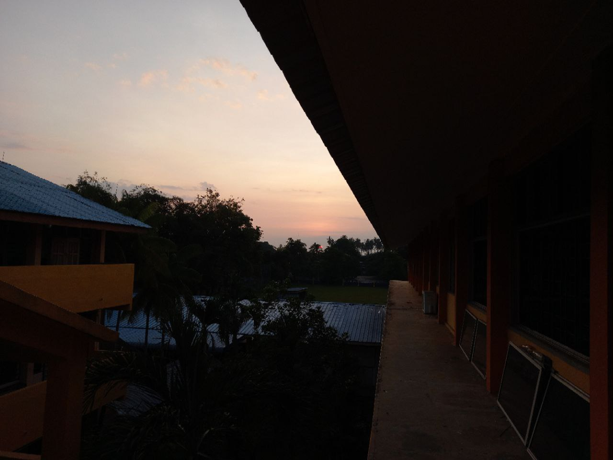
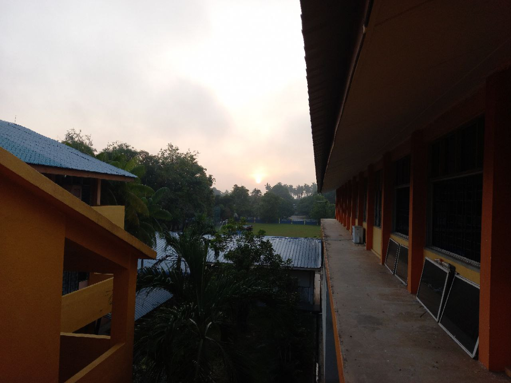
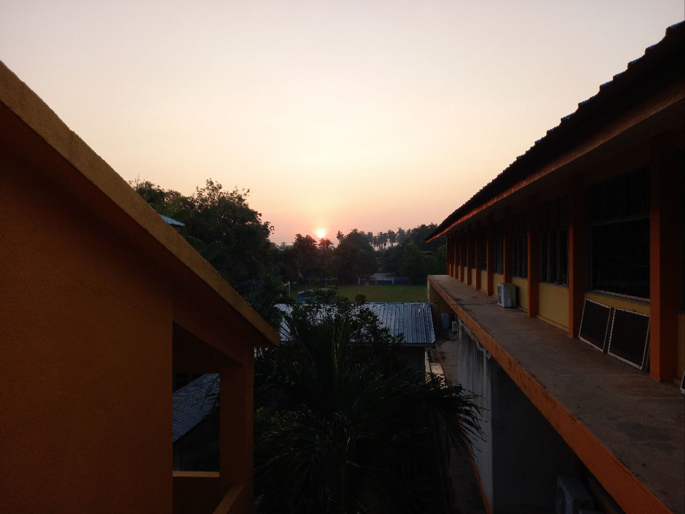
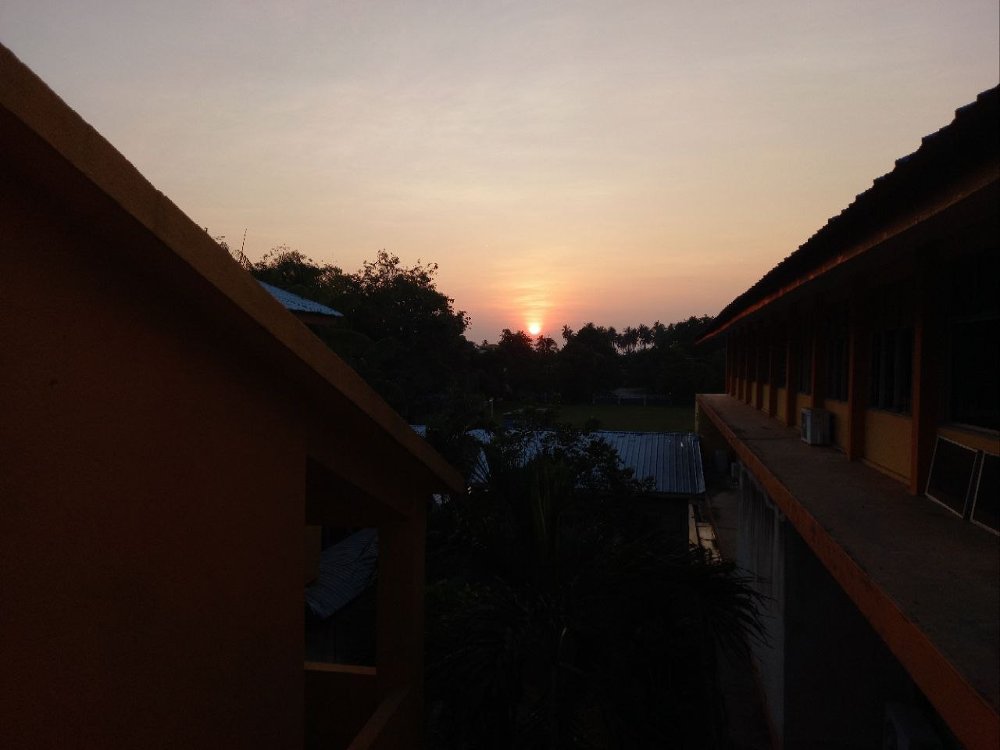
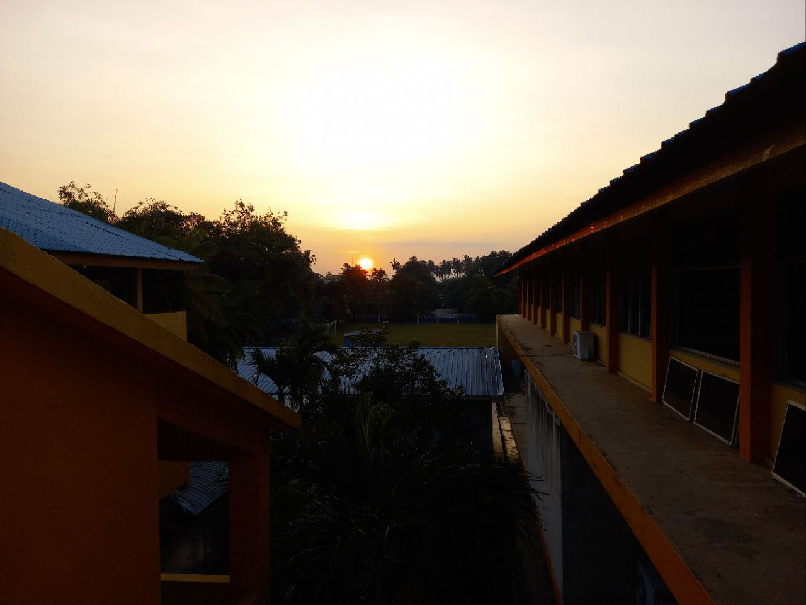
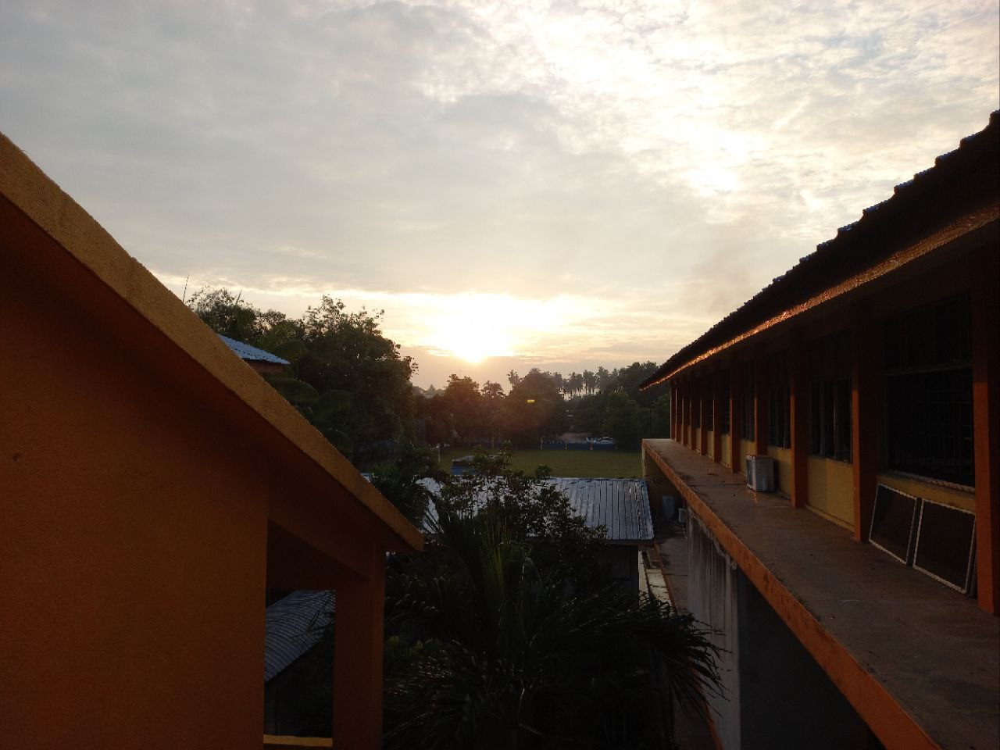

Lalaytul Qadr
Focusing On What Matters Most
Laylatul Qadr (ليلة القدر), also known as the Night of Decree or Night of Power, is one of the holiest nights in Islam. It is the night during which the first verses of the Qur'an were revealed to the Prophet Muhammad (PBUH) by the Angel Jibreel (Gabriel). This night falls in the last ten days of Ramadan, with many scholars suggesting it occurs on one of the odd-numbered nights, particularly the 27th night, though the exact night remains unknown.
The 10th Last Days of Ramadan – Observing Laylatul Qadr
The 10th Last Days of Ramadan – Observing Laylatul Qadr
At SMKDHAB, one of the most spiritually significant phenomena we study is the 10th last days of Ramadan, specifically focusing on the night of Laylatul Qadr. Known as the Night of Decree or Night of Power, Laylatul Qadr holds profound religious importance in Islam. It is the night when the Quran was first revealed to Prophet Muhammad (PBUH), and it is believed to occur within the last 10 days of Ramadan, on an odd-numbered night. Observing and experiencing Laylatul Qadr is a deeply spiritual act, as the Quran describes it as "better than a thousand months" (Surah Al-Qadr 97:3).
Observing the Sunrise During Laylatul Qadr One of the traditions that many Muslims practice is observing the sunrise on the mornings following the possible nights of Laylatul Qadr. It is believed that the Sun rises without the usual intensity or strong rays on this special morning, offering a sign of the serenity and peace that accompanied the night of worship.
At SMKDHAB, we involve our students in observing and recording the sunrise during the mornings of the last 10 days of Ramadan. This activity helps to link the spiritual significance of Laylatul Qadr with scientific observation and encourages reflection on the wonders of Allah's creation.
At SMKDHAB, we involve our students in observing and recording the sunrise during the mornings of the last 10 days of Ramadan. This activity helps to link the spiritual significance of Laylatul Qadr with scientific observation and encourages reflection on the wonders of Allah's creation.
- Sunrise Photography: Each morning during the last 10 days of Ramadan, students take photographs of the sunrise. This allows them to compare the visual characteristics of the Sun’s appearance and note any differences, such as the calmness and softness of its light.
- Journal Reflections: Students keep a journal to document their spiritual experiences during the last 10 days, especially on mornings they believe could be Laylatul Qadr. This encourages mindfulness and connection to the divine.
- Religious Discussions: In class, we engage students in discussions about the significance of Laylatul Qadr and its meaning in their lives. We explore the virtues of worship and the value of seeking forgiveness, mercy, and blessings during this holy time.
Copyright Original-Work
| Date | Islamic Date | Time | |
|---|---|---|---|
 |
30-3-2024 | 20 Ramadan | 07.32 AM |
|  | 31-3-2024 | 21 Ramadan | 07.32 AM |
|  | 1-4-2024 | 22 Ramadan | 07.25 AM |
|  | 2-3-2024 | 23 Ramadan | 07.25 AM |
|  | 3-4-2024 | 24 Ramadan | 07.25 AM |
|  | 4-4-2024 | 25 Ramadan | 07.30 AM |
|  | 5-4-2024 | 26 Ramadan | 07.27 AM |
|  | 6-4-2024 | 27 Ramadan | 07.26 AM |
|  | 7-4-2024 | 28 Ramadan | 07.25 AM |
|  | 8-4-2024 | 29 Ramadan | 07.32 AM |